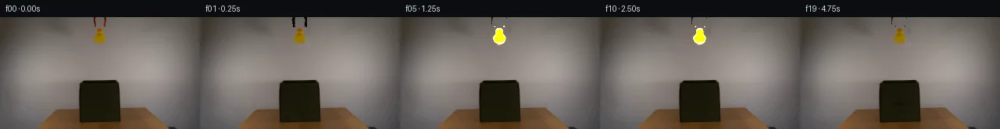
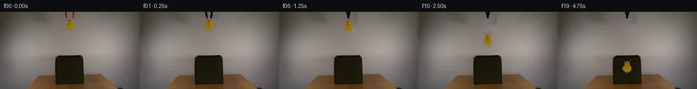
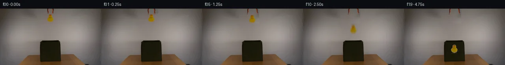
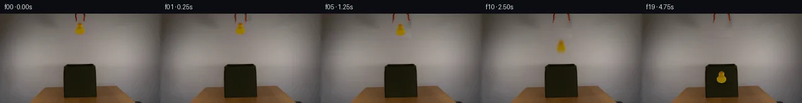
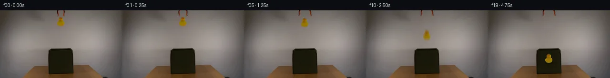
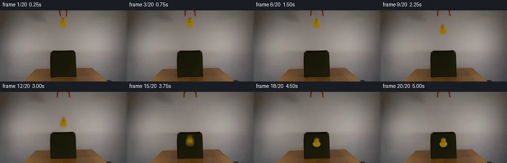
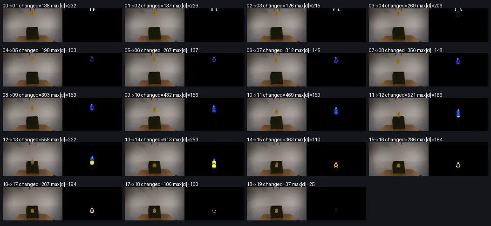

V0 · 初版
2026-11-06T07:22:10.085956+00:00 · RGB 4152ff8f96a3
![]()
Observable Generation Trace
把最终像素视频、Harness 冻结的每轮候选、真实工具事件和 Agent 自述放在同一页。可观测证据与模型自述分开标记，避免把“模型说它检查过”误当成真实工具调用。
![首帧]()
Static locked-off single-shot with fixed frame throughout filmed with constant framerate in real-time. The scene shows a realistic scientific demonstration. The scene only contains the described setup and actions. An orange-black grabber tool is suspended above the open dark green fabric box on a wooden table. The orange-black grabber tool releases the yellow rubber duck above the open dark green fabric box.
首帧显示在左侧播放器初始画面。Track 权限、隔离和 tensor 一致性来自 run manifest，而不是 METHOD.md。
默认勾选初版和最终版；可选其他版本一起同步播放。仅检查图更新的连续重复快照已合并，回退旧视频仍保留为一次修订。
Observable events
来源：events.jsonl + run manifest
此 Track 禁止读取输出图片。逐轮预览由外部 Harness 自动冻结，只用于事后审计，生成 Agent 当时看不到这些页面。
Frozen candidates
每张图来自该 round 的真实 00 / 01 / 05 / 10 / 19 帧

pixels b63c50f463363b9f · code 60c5ce55ac626eb4
--- previous/generate.py
+++ current/generate.py
@@ -0,0 +1,235 @@
+"""PixelWorld case_0059: orange-black grabber releases a yellow rubber duck above
+an open dark-green fabric box; the duck falls into the box and settles on its floor.
+
+Pure local pixel operations: sprite extraction against a row-wise wall model,
+inpainting from adjacent wall columns, rigid prong rotation, analytic free-fall
+physics with motion blur / tumble / squash-and-stretch, and an analytic contact
+shadow. Frame 00 is the untouched first_frame.png.
+"""
+from pathlib import Path
+import numpy as np
+from PIL import Image
+from scipy.ndimage import distance_transform_edt, affine_transform
+
+import artifact_io
+
+CASE = Path(__file__).parent
+N = 20
+DT = 0.25 # 4 fps
+
+# ---------------------------------------------------------------- load
+frame0 = np.array(Image.open(CASE / 'first_frame.png').convert('RGB')).astype(np.float64)
+H, W, _ = frame0.shape
+assert (H, W) == (144, 256)
+
+# ------------------------------------------------------- wall colour model
+# Per-row medians of clean wall strips on either side of the suspended objects;
+# interpolate linearly in x.
+left_med = np.array([np.median(frame0[y, 96:112].reshape(-1, 3), 0) for y in range(H)])
+right_med = np.array([np.median(frame0[y, 142:158].reshape(-1, 3), 0) for y in range(H)])
+xs = np.arange(W)
+w_lin = (142.0 - xs) / (142.0 - 96.0) # 1 at left strip, 0 at right strip
+wall = left_med[:, None, :] * w_lin[None, :, None] + right_med[:, None, :] * (1 - w_lin)[None, :, None]
+dist_to_wall = np.abs(frame0 - wall).sum(2)
+
+
+def extract_rgba(y0, y1, x0, x1, thresh_lo=10.0, thresh_hi=30.0, shrink=0.18):
+ """Cut an RGBA sprite from frame0 using deviation from the wall model.
+ Edge colours are decontaminated by nearest fully-covered core pixel, and
+ alpha is slightly shrunk to suppress wall-coloured fringe on compositing."""
+ rgb = frame0[y0:y1, x0:x1].copy()
+ d = dist_to_wall[y0:y1, x0:x1]
+ alpha = np.clip((d - thresh_lo) / (thresh_hi - thresh_lo), 0.0, 1.0)
+ core = alpha >= 0.75
+ if core.any():
+ # nearest core colour fill for colour decontamination
+ _, (iy, ix) = distance_transform_edt(~core, return_indices=True)
+ rgb = rgb[iy, ix]
+ a2 = np.clip((alpha - shrink) / (1.0 - shrink), 0.0, 1.0)
+ return np.concatenate([rgb, a2[..., None]], 2)
+
+
+# ------------------------------------------------------- sprites
+# Duck: generous crop with margin for rotation / squash expansion.
+DUCK_X0, DUCK_Y0, DUCK_W, DUCK_H = 111, 11, 33, 27
+duck_sprite = extract_rgba(DUCK_Y0, DUCK_Y0 + DUCK_H, DUCK_X0, DUCK_X0 + DUCK_W)
+DUCK_ANCHOR = (127.5 - DUCK_X0, 34.0 - DUCK_Y0) # (x, y) body bottom-centre
+
+# Prongs: tight strips, full visible height.
+armL_strip = extract_rgba(0, 13, 117, 124, shrink=0.10) # 13 x 7
+armR_strip = extract_rgba(0, 13, 130, 137, shrink=0.10) # 13 x 7
+
+
+def extend_upward(strip, pivot_y=-18.0, bottom_y=16.0, top_y=-26.0):
+ """Extend a prong strip upward off-frame (shaft continues out of view) so
+ rotation never exposes a hole at the top edge. Returns an RGBA canvas whose
+ row 0 corresponds to top_y; pivot is at canvas row (pivot_y - top_y)."""
+ h = int(round(bottom_y - top_y))
+ w = strip.shape[1]
+ canvas = np.zeros((h, w, 4))
+ canvas[0 - int(top_y):13 - int(top_y)] = strip # visible part at y 0..12
+ # Synthesise the off-frame shaft from the mean colour/alpha of the top rows,
+ # keeping the same per-column profile.
+ profile_a = strip[:5, :, 3].mean(0)
+ profile_c = strip[:5, :, :3].reshape(-1, 3)
+ profile_c = profile_c[strip[:5, :, 3].reshape(-1) > 0.6].mean(0) if (strip[:5, :, 3] > 0.6).any() else strip[:5, :, :3].mean((0, 1))
+ up = -int(top_y)
+ for c in range(w):
+ canvas[:up, c, :3] = profile_c
+ canvas[:up, c, 3] = profile_a[c]
+ return canvas
+
+
+def rotated_arm(canvas, pivot_cx_col, pivot_row, angle_deg):
+ im = Image.fromarray(np.clip(canvas * 255, 0, 255).astype(np.uint8), 'RGBA')
+ rot = im.rotate(angle_deg, resample=Image.BILINEAR, center=(pivot_cx_col, pivot_row))
+ return np.asarray(rot).astype(np.float64) / 255.0
+
… diff truncated; 148 more lines …pixels b63c50f463363b9f · code 39005b44d639445a
--- previous/generate.py
+++ current/generate.py
@@ -60,23 +60,30 @@
armR_strip = extract_rgba(0, 13, 130, 137, shrink=0.10) # 13 x 7
-def extend_upward(strip, pivot_y=-18.0, bottom_y=16.0, top_y=-26.0):
+ARM_CAN_W = 27 # wide enough that a 13° swing stays on-canvas
+ARM_CAN_PIVOT_COL = 13 # prong centre column within the wide canvas
+
+
+def extend_upward(strip, col_offset, pivot_y=-18.0, bottom_y=16.0, top_y=-26.0):
"""Extend a prong strip upward off-frame (shaft continues out of view) so
- rotation never exposes a hole at the top edge. Returns an RGBA canvas whose
- row 0 corresponds to top_y; pivot is at canvas row (pivot_y - top_y)."""
+ rotation never exposes a hole at the top edge. Returns a wide RGBA canvas
+ whose row 0 corresponds to top_y and whose pivot is at column
+ ARM_CAN_PIVOT_COL, row (pivot_y - top_y); the strip sits at col_offset."""
h = int(round(bottom_y - top_y))
- w = strip.shape[1]
- canvas = np.zeros((h, w, 4))
- canvas[0 - int(top_y):13 - int(top_y)] = strip # visible part at y 0..12
+ canvas = np.zeros((h, ARM_CAN_W, 4))
+ canvas[0 - int(top_y):13 - int(top_y), col_offset:col_offset + strip.shape[1]] = strip
# Synthesise the off-frame shaft from the mean colour/alpha of the top rows,
# keeping the same per-column profile.
- profile_a = strip[:5, :, 3].mean(0)
- profile_c = strip[:5, :, :3].reshape(-1, 3)
- profile_c = profile_c[strip[:5, :, 3].reshape(-1) > 0.6].mean(0) if (strip[:5, :, 3] > 0.6).any() else strip[:5, :, :3].mean((0, 1))
+ top_rows = strip[:5]
+ profile_a = top_rows[:, :, 3].mean(0)
+ covered = top_rows[:, :, 3] > 0.6
+ profile_c = (top_rows[:, :, :3][covered].mean(0) if covered.any()
+ else top_rows[:, :, :3].mean((0, 1)))
up = -int(top_y)
- for c in range(w):
- canvas[:up, c, :3] = profile_c
- canvas[:up, c, 3] = profile_a[c]
+ for c in range(strip.shape[1]):
+ cc = col_offset + c
+ canvas[:up, cc, :3] = profile_c
+ canvas[:up, cc, 3] = profile_a[c]
return canvas

pixels 85bebacf4b420d96 · code 4bf6fc9249d09e97
--- previous/generate.py
+++ current/generate.py
@@ -55,23 +55,25 @@
duck_sprite = extract_rgba(DUCK_Y0, DUCK_Y0 + DUCK_H, DUCK_X0, DUCK_X0 + DUCK_W)
DUCK_ANCHOR = (127.5 - DUCK_X0, 34.0 - DUCK_Y0) # (x, y) body bottom-centre
-# Prongs: tight strips, full visible height.
-armL_strip = extract_rgba(0, 13, 117, 124, shrink=0.10) # 13 x 7
+# Prongs: tight strips, full visible height. Core columns: left x≈121, right x≈133.
+armL_strip = extract_rgba(0, 13, 118, 125, shrink=0.10) # 13 x 7
armR_strip = extract_rgba(0, 13, 130, 137, shrink=0.10) # 13 x 7
-ARM_CAN_W = 27 # wide enough that a 13° swing stays on-canvas
-ARM_CAN_PIVOT_COL = 13 # prong centre column within the wide canvas
-
-
-def extend_upward(strip, col_offset, pivot_y=-18.0, bottom_y=16.0, top_y=-26.0):
+ARM_CAN_W = 27 # wide enough that a 13° swing stays on-canvas
+ARM_CAN_PIVOT_COL = 13.5 # prong centre column within the wide canvas
+ARM_STRIP_OFFSET = 10 # 7 px strip sits at canvas columns 10..16
+
+
+def extend_upward(strip, pivot_y=-18.0, bottom_y=16.0, top_y=-26.0):
"""Extend a prong strip upward off-frame (shaft continues out of view) so
rotation never exposes a hole at the top edge. Returns a wide RGBA canvas
whose row 0 corresponds to top_y and whose pivot is at column
- ARM_CAN_PIVOT_COL, row (pivot_y - top_y); the strip sits at col_offset."""
+ ARM_CAN_PIVOT_COL, row (pivot_y - top_y)."""
h = int(round(bottom_y - top_y))
canvas = np.zeros((h, ARM_CAN_W, 4))
- canvas[0 - int(top_y):13 - int(top_y), col_offset:col_offset + strip.shape[1]] = strip
+ canvas[0 - int(top_y):13 - int(top_y),
+ ARM_STRIP_OFFSET:ARM_STRIP_OFFSET + strip.shape[1]] = strip
# Synthesise the off-frame shaft from the mean colour/alpha of the top rows,
# keeping the same per-column profile.
top_rows = strip[:5]
@@ -81,7 +83,7 @@
else top_rows[:, :, :3].mean((0, 1)))
up = -int(top_y)
for c in range(strip.shape[1]):
- cc = col_offset + c
+ cc = ARM_STRIP_OFFSET + c
canvas[:up, cc, :3] = profile_c
canvas[:up, cc, 3] = profile_a[c]
return canvas
@@ -95,10 +97,11 @@
ARM_TOP = -26
ARM_PIVOT_Y = -18
-armL_can = extend_upward(armL_strip, ARM_PIVOT_Y)
-armR_can = extend_upward(armR_strip, ARM_PIVOT_Y)
-# strip crop origins: left x=117 (centre 120.5), right x=130 (centre 133.5)
-ARML_CX, ARMR_CX = 120.5, 133.5
+armL_can = extend_upward(armL_strip)
+armR_can = extend_upward(armR_strip)
+# Canvas paste x so the pivot column maps to the prong's screen core (L 121, R 133.5)
+ARML_PASTE_X = 121.0 - ARM_CAN_PIVOT_COL # 107.5
+ARMR_PASTE_X = 133.5 - ARM_CAN_PIVOT_COL # 120.0
ARM_PIVOT_ROW = ARM_PIVOT_Y - ARM_TOP
# ------------------------------------------------------- inpainted background
@@ -106,8 +109,8 @@
# adjacent clean columns (x_src = 227 - x maps 114..141 -> 113..86).
background = frame0.copy()
for y in range(0, 38):
- for x in range(114, 142):
- xs_src = 227 - x
+ for x in range(111, 145):
+ xs_src = 224 - x # mirror about x=112, landing on clean wall x 80..113
grain = frame0[y, xs_src] - wall[y, xs_src]
background[y, x] = wall[y, x] + grain
background = np.clip(background, 0, 255)
@@ -189,51 +192,65 @@
frames = [np.asarray(Image.open(CASE / 'first_frame.png').convert('RGB'), dtype=np.uint8)]
for f in range(1, N):
- canvas = background.copy()
-
- # contact shadow once the duck approaches / enters the box
- bottom_now = 34.0 + offsets[f]
- progress = float(np.clip((bottom_now - 82.0) / (112.0 - 82.0), 0.0, 1.0))
- contact_shadow(canvas, progress)
+ if f <= 3:
+ # The duck has not moved yet: keep frame 0 untouched except for the
+ # narrow prong band, so the held duck stays pixel-exact.
+ canvas = frame0.copy()
+ # erase only the prong band; duck beak starts at y≈14
+ canvas[0:13, 111:145] = background[0:13, 111:145]
+ else:
… diff truncated; 91 more lines …pixels 85bebacf4b420d96 · code 4bf6fc9249d09e97
No generate.py text change in this frozen round.
pixels 6257199ed5c9fcaa · code e8647a9e3ddfa66c
--- previous/generate.py +++ current/generate.py @@ -60,49 +60,57 @@ armR_strip = extract_rgba(0, 13, 130, 137, shrink=0.10) # 13 x 7 -ARM_CAN_W = 27 # wide enough that a 13° swing stays on-canvas -ARM_CAN_PIVOT_COL = 13.5 # prong centre column within the wide canvas -ARM_STRIP_OFFSET = 10 # 7 px strip sits at canvas columns 10..16 - - -def extend_upward(strip, pivot_y=-18.0, bottom_y=16.0, top_y=-26.0): - """Extend a prong strip upward off-frame (shaft continues out of view) so - rotation never exposes a hole at the top edge. Returns a wide RGBA canvas - whose row 0 corresponds to top_y and whose pivot is at column - ARM_CAN_PIVOT_COL, row (pivot_y - top_y).""" - h = int(round(bottom_y - top_y)) - canvas = np.zeros((h, ARM_CAN_W, 4)) - canvas[0 - int(top_y):13 - int(top_y), - ARM_STRIP_OFFSET:ARM_STRIP_OFFSET + strip.shape[1]] = strip - # Synthesise the off-frame shaft from the mean colour/alpha of the top rows, - # keeping the same per-column profile. - top_rows = strip[:5] - profile_a = top_rows[:, :, 3].mean(0) - covered = top_rows[:, :, 3] > 0.6 - profile_c = (top_rows[:, :, :3][covered].mean(0) if covered.any() - else top_rows[:, :, :3].mean((0, 1))) - up = -int(top_y) - for c in range(strip.shape[1]): - cc = ARM_STRIP_OFFSET + c - canvas[:up, cc, :3] = profile_c - canvas[:up, cc, 3] = profile_a[c] - return canvas - - -def rotated_arm(canvas, pivot_cx_col, pivot_row, angle_deg): - im = Image.fromarray(np.clip(canvas * 255, 0, 255).astype(np.uint8), 'RGBA') - rot = im.rotate(angle_deg, resample=Image.BILINEAR, center=(pivot_cx_col, pivot_row)) - return np.asarray(rot).astype(np.float64) / 255.0 - - -ARM_TOP = -26 -ARM_PIVOT_Y = -18 -armL_can = extend_upward(armL_strip) -armR_can = extend_upward(armR_strip) -# Canvas paste x so the pivot column maps to the prong's screen core (L 121, R 133.5) -ARML_PASTE_X = 121.0 - ARM_CAN_PIVOT_COL # 107.5 -ARMR_PASTE_X = 133.5 - ARM_CAN_PIVOT_COL # 120.0 -ARM_PIVOT_ROW = ARM_PIVOT_Y - ARM_TOP +ARM_PIVOT_Y = -18.0 # screen y of the (off-frame) prong hinge + + +def warp_arm(canvas, strip, cx, side, angle_deg): + """Composite one prong swung open by `angle_deg` about the off-frame hinge. + + Analytic inverse warp in screen space: keeps the prong its original 2-3 px + width with its own orange-core / black-edge colours (a raster rotate would + thicken and darken such a thin feature). `side` is +1 for the left prong + (tip swings left) and -1 for the right prong (tip swings right). + """ + a = np.deg2rad(angle_deg) + ca, sa = np.cos(a), np.sin(a) + sh, sw = strip.shape[:2] + col_center = 3.2 # prong core column inside the 7 px strips + y0, y1 = 0, 15 + x0, x1 = int(cx - 9), int(cx + 10) + for y in range(y0, y1): + v = y - ARM_PIVOT_Y + for x in range(x0, x1): + dx = x - cx + # exact inverse of the local(p,u) -> screen(dx,v) rotation + p = dx * ca + side * v * sa # across the prong + u = v * ca - side * dx * sa # along the prong, from hinge + r = u + ARM_PIVOT_Y # strip row along the prong + c = col_center + p # strip column across the prong + if c < -0.5 or c > sw - 0.5: + continue + rc = min(max(r, 0.0), sh - 1.0) # shaft profile is uniform + r0, c0 = int(np.floor(rc)), int(np.floor(c)) + fr, fc = rc - r0, c - c0 + r1i = min(r0 + 1, sh - 1) + c1i = min(c0 + 1, sw - 1) + if c0 < 0: + c0 = 0 + al = (strip[r0, c0, 3] * (1 - fr) * (1 - fc) + + strip[r1i, c0, 3] * fr * (1 - fc) + + strip[r0, c1i, 3] * (1 - fr) * fc + + strip[r1i, c1i, 3] * fr * fc) + if al <= 0.01: + continue … diff truncated; 31 more lines …

pixels 91ec8d1b7772dbf1 · code ea0dd3e3d8600977
--- previous/generate.py +++ current/generate.py @@ -53,6 +53,9 @@ # Duck: generous crop with margin for rotation / squash expansion. DUCK_X0, DUCK_Y0, DUCK_W, DUCK_H = 111, 11, 33, 27 duck_sprite = extract_rgba(DUCK_Y0, DUCK_Y0 + DUCK_H, DUCK_X0, DUCK_X0 + DUCK_W) +# Crop rows 0..2 (screen y 11..13) still contain the prong tips — drop them so +# they do not ride along as ghosts on the falling duck. +duck_sprite[:3, :, 3] = 0.0 DUCK_ANCHOR = (127.5 - DUCK_X0, 34.0 - DUCK_Y0) # (x, y) body bottom-centre # Prongs: tight strips, full visible height. Core columns: left x≈121, right x≈133.

pixels 7814721ffdf412fb · code ed911946d9bda709
--- previous/generate.py
+++ current/generate.py
@@ -49,10 +49,27 @@
return np.concatenate([rgb, a2[..., None]], 2)
+def extract_duck_rgba(y0, y1, x0, x1):
+ """Cut the yellow duck by its own colour signature (yellow/orange: low blue,
+ strong red-blue spread), explicitly excluding the dim, low-saturation drop
+ shadow it casts on the wall in frame0 — that shadow must not travel with the
+ sprite. Edge colours are decontaminated from the nearest saturated core."""
+ rgb = frame0[y0:y1, x0:x1].copy()
+ r, g, b = rgb[..., 0], rgb[..., 1], rgb[..., 2]
+ spread = r - b
+ alpha = np.clip((spread - 42.0) / 46.0, 0.0, 1.0)
+ alpha *= np.clip((112.0 - b) / 34.0, 0.0, 1.0)
+ alpha *= np.clip((r - 92.0) / 26.0, 0.0, 1.0)
+ core = alpha >= 0.85
+ _, (iy, ix) = distance_transform_edt(~core, return_indices=True)
+ rgb = rgb[iy, ix]
+ return np.concatenate([rgb, alpha[..., None]], 2)
+
+
# ------------------------------------------------------- sprites
# Duck: generous crop with margin for rotation / squash expansion.
DUCK_X0, DUCK_Y0, DUCK_W, DUCK_H = 111, 11, 33, 27
-duck_sprite = extract_rgba(DUCK_Y0, DUCK_Y0 + DUCK_H, DUCK_X0, DUCK_X0 + DUCK_W)
+duck_sprite = extract_duck_rgba(DUCK_Y0, DUCK_Y0 + DUCK_H, DUCK_X0, DUCK_X0 + DUCK_W)
# Crop rows 0..2 (screen y 11..13) still contain the prong tips — drop them so
# they do not ride along as ghosts on the falling duck.
duck_sprite[:3, :, 3] = 0.0pixels 7814721ffdf412fb · code ed911946d9bda709
No generate.py text change in this frozen round.
pixels 7814721ffdf412fb · code e4cc349e20c0720e
--- previous/generate.py
+++ current/generate.py
@@ -8,7 +8,7 @@
"""
from pathlib import Path
import numpy as np
-from PIL import Image
+from PIL import Image, ImageDraw
from scipy.ndimage import distance_transform_edt, affine_transform
import artifact_io
@@ -281,3 +281,29 @@
frames = np.stack(frames)
assert frames.shape == (N, H, W, 3) and frames.dtype == np.uint8
artifact_io.save(frames, CASE)
+
+
+# ----------------------------------------------- transition diagnostic sheet
+from PIL import ImageDraw
+
+CELL_H2 = 72
+sheet = Image.new('RGB', (W * 4 + 5 * 6, (CELL_H2 + 18) * 5 + 6 * 6), (20, 22, 28))
+draw = ImageDraw.Draw(sheet)
+for i in range(1, N):
+ a = frames[i - 1].astype(np.int16)
+ b = frames[i].astype(np.int16)
+ d = np.abs(b - a).sum(2)
+ changed = int((d > 8).sum())
+ amp = np.clip(np.abs(b - a) * 6, 0, 255).astype(np.uint8)
+ pair = Image.new('RGB', (W * 2, H))
+ pair.paste(Image.fromarray(frames[i]), (0, 0))
+ pair.paste(Image.fromarray(amp), (W, 0))
+ pair = pair.resize((W, CELL_H2), Image.Resampling.NEAREST)
+ col, row = (i - 1) % 4, (i - 1) // 4
+ x = 6 + col * (W + 6)
+ y = 6 + row * (CELL_H2 + 18 + 6)
+ draw.text((x, y), f'{i - 1:02d}->{i:02d} changed={changed} max|d|={int(d.max())}',
+ fill='white')
+ sheet.paste(pair, (x, y + 12))
+sheet.save(CASE / 'transition_check.png')
+print('Saved transition diagnostic sheet')
pixels f0e4f2cb6a180360 · code fb842870356ed191
--- previous/generate.py
+++ current/generate.py
@@ -108,7 +108,9 @@
c = col_center + p # strip column across the prong
if c < -0.5 or c > sw - 0.5:
continue
- rc = min(max(r, 0.0), sh - 1.0) # shaft profile is uniform
+ if r > sh - 1.0:
+ continue # below the prong tip
+ rc = max(r, 0.0) # shaft continues off-frame
r0, c0 = int(np.floor(rc)), int(np.floor(c))
fr, fc = rc - r0, c - c0
r1i = min(r0 + 1, sh - 1)
@@ -137,8 +139,11 @@
# adjacent clean columns (x_src = 227 - x maps 114..141 -> 113..86).
background = frame0.copy()
for y in range(0, 38):
- for x in range(111, 145):
- xs_src = 224 - x # mirror about x=112, landing on clean wall x 80..113
+ for x in range(111, 142):
+ # Take high-frequency grain from the nearest clean wall strip at the
+ # same horizontal distance (left strip 97..113, right strip 143..156);
+ # the row wall model supplies the correct horizontal gradient.
+ xs_src = 224 - x if x <= 127 else 284 - x
grain = frame0[y, xs_src] - wall[y, xs_src]
background[y, x] = wall[y, x] + grain
background = np.clip(background, 0, 255)
@@ -225,7 +230,7 @@
# narrow prong band, so the held duck stays pixel-exact.
canvas = frame0.copy()
# erase only the prong band; duck beak starts at y≈14
- canvas[0:13, 111:145] = background[0:13, 111:145]
+ canvas[0:13, 111:142] = background[0:13, 111:142]
else:
canvas = background.copy()
# contact shadow once the duck approaches / enters the boxFinal visual checks
Harness 保存的最终产物


Agent claims
以下文字由生成 Agent 撰写，不等同于工具证据
All measurements below were obtained from first_frame.png (256×144 RGB) by local
Python/numpy numeric analysis only (channel thresholds, row/column medians, ASCII
segmentation maps). No image-viewing tool was used on derived frames.
Free fall starts at frame 4 (release after the prongs swing out). Gravity chosen so the duck's bottom reaches the visible interior floor at y≈112 at frame 14: drop = ½gΔt² with g ≈ 20.6 px/s², Δt = (f−3)·0.25 s, measured from the duck's initial top y=14.
| frame | t (s) | prong angle | duck top-y offset | event |
|---|---|---|---|---|
| 00 | 0.00 | 0° | 0 | exact first_frame.png |
| 01 | 0.25 | 4° | 0 | prongs start opening |
| 02 | 0.50 | 8° | 0 | prongs opening |
| 03 | 0.75 | 11° | 0 | release instant, duck still |
| 04 | 1.00 | 13° | +0.6 | fall begins; within-frame vertical motion blur |
| 05 | 1.25 | 13° | +2.6 | accelerating fall |
| 06 | 1.50 | 13° | +5.8 | accelerating fall |
| 07 | 1.75 | 13° | +10.3 | accelerating fall |
| 08 | 2.00 | 13° | +16.1 | accelerating fall |
| 09 | 2.25 | 13° | +23.2 | accelerating fall |
| 10 | 2.50 | 13° | +31.6 | bottom at y≈66, approaching the back rim |
| 11 | 2.75 | 13° | +41.3 | bottom at y≈75, just above the rim |
| 12 | 3.00 | 13° | +52.3 | bottom crosses rim (y≈86); contact shadow starts; blur ~11 px |
| 13 | 3.25 | 13° | +64.6 | approaching floor |
| 14 | 3.50 | 13° | +78.3 (bottom y≈112) | impact; squash (1.12×,0.85×) |
| 15 | 3.75 | 13° | +72.0 | small bounce up (~6 px); stretch (0.92×,1.12×) |
| 16 | 4.00 | 13° | +77.0 | re-contact; slight squash (1.07×,0.93×) |
| 17 | 4.25 | 13° | +78.3 | settles; tiny wobble (1.03×,0.97×) |
| 18 | 4.50 | 13° | +78.3 | at rest upright on floor, contact shadow |
| 19 | 4.75 | 13° | +78.3 | at rest; prongs remain open above |
Additional motion cues:
Task: locked-off single shot; an orange-black grabber suspended above an open dark green fabric box releases a yellow rubber duck, which falls into the box and settles on its visible floor. 20 RGB frames, 256×144, 4 fps.
Everything was produced with local Python only (numpy, Pillow, scipy.ndimage). No network, external models/engines, references, or image-viewing tools on generated frames — quality checks were numeric (channel statistics, ASCII classification maps, frame differencing).
generate.py)frames/00.png is a byte-exact copy of first_frame.png (verified: max abs diff 0).
Per-row median colours from clean wall strips x=96..111 and x=142..157 are linearly interpolated across x, giving a per-pixel wall estimate including the vignette and the slight left/right gradient. Deviation from this estimate (sum of channel distances) segments the suspended prongs and, with a colour-signature mask, the duck.
The vacated region (y 0..37, x 111..141) is rebuilt from the wall model. High-frequency grain is taken from the nearest clean wall strip at the same horizontal distance (mirror about x=112 onto x≈83..113 for the left half, about x=142 onto x=143..156 for the right half), so the patched area matches the surrounding wall texture. All other pixels (table, box, wall corners, clipped object at bottom-right) are never touched.
affine_transform, inverse mapping).artifact_io.save writes pixels.npz (uint32 0xRRGGBB, shape 144×256×20),
frames/00..19.png, inspection.png (8 key frames) and the standalone index.html
delta player. transition_check.png (written by generate.py) shows all 19
transitions as new-frame/amplified-diff pairs with changed-pixel counts and max deltas.
frames/00.png equals first_frame.png exactly; the npz tensor equals the packed
PNGs exactly.